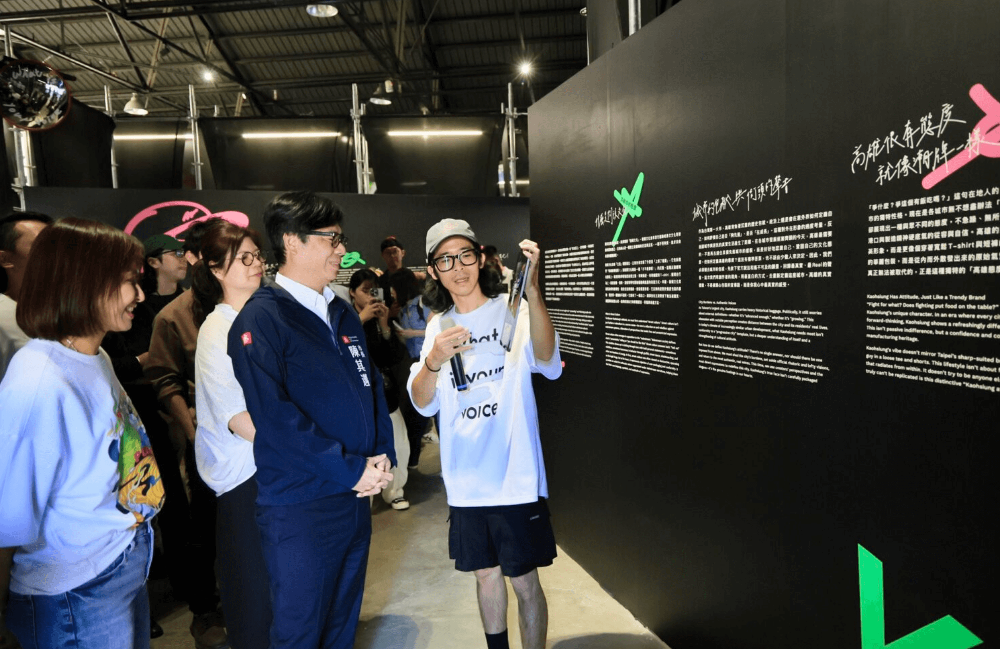
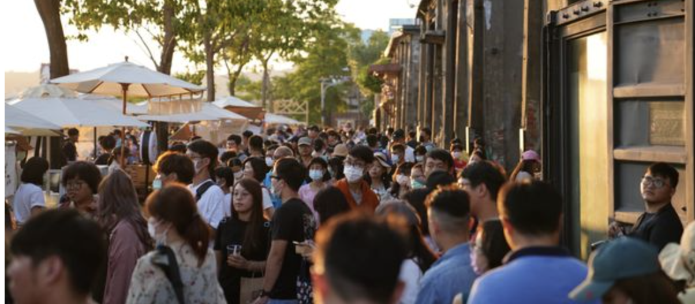
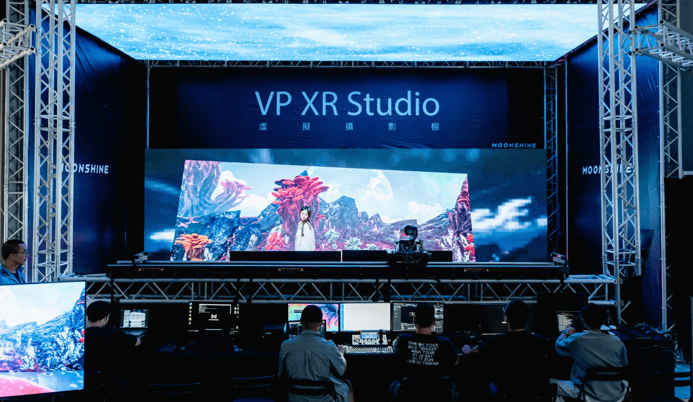

在高雄，有一個地方，它見證了港都數十年的興衰與變遷，如今又以全新的面貌，成為南台灣最閃耀的文化符號——那便是駁二藝術特區。它不再是冰冷的倉庫群，而是充滿活力、創意湧動的「城市與海的聚落新生」。
從「閒置」到「指標」的華麗轉身：歷史的延續
「駁二」二字，原是第二號接駁碼頭的簡稱。這些日治時期留下的舊倉庫，曾經堆滿米、糖、木材等貨物，在高雄港的黃金年代功不可沒。然而，隨著全球海運模式改變，貨櫃取代散裝貨運，這片第三船渠旁的區域在 1990 年代陷入沉寂，成為少年滑板、街頭塗鴉者的秘密基地，充滿了被邊緣化的詩意。
日式文創的細膩與港都的粗獷美學：年輕人才的聚落
駁二的成功，在於其獨特的風格調性。它巧妙地融合了高雄港口的粗獷工業美學，以及台灣新一代文創人所汲取的日式細膩工藝精神。這種強烈的對比與融合，吸引了大量年輕設計師、藝術家和獨立品牌在此設立工作室和特色店鋪。
這裡不僅是藝術家的「實驗工坊」，更是青年次文化的發聲地。在駁二，你可以看到年輕人將對在地文化（如高雄腔、在地美食）的理解，透過設計轉化為潮流 T-shirt、創意小物或實驗劇場。駁二的特色店鋪，例如結合舊船零件和當代設計的傢俱店，或是將台灣傳統文化圖騰融入極簡風格的服飾品牌，都展現了新一代設計師的獨立主張和對「台日生活美學」的獨到見解。
每週末的文創市集：永不落幕的生活美學實驗場
文創市集是駁二永不落幕的節慶。每逢假日，來自台灣各地的手作職人、獨立品牌集結於此，讓駁二成為一個巨大的生活美學實驗場。遊客在尋寶的樂趣中，不僅能買到獨特的商品，更能親身感受台灣與日本手作文化的細膩與溫度。這種由下而上、自發性的創意聚落，正是駁二能夠持續吸引國際目光的關鍵。
這份創意能量在每兩年一度的「高雄設計節」中達到高峰。設計節早已超越了單純的作品展示，轉變為深度探討城市議題、產業升級和文化科技融合的論壇。從早期關注在地歷史與工業遺產的設計，到近年結合 AI、AR 技術的數位內容創新，設計節將高雄視為一個巨型「潮牌」，用設計師的視角詮釋這座城市兼容並蓄、海派生猛的態度。
結語：面向山與海的「南方新浪潮」
駁二藝術特區的成功，遠超乎一個觀光景點的意義。它證明了高雄有能力將其工業歷史的「黑」（重工業、黑手）與海洋文化的海派「生猛」結合，創造出一種獨特而強烈的「南方新浪潮」精神。這股浪潮，不僅僅是藝術上的前衛，更代表著高雄在「大南方新矽谷」的宏觀願景下，文化與科技共創、共融的決心。
它以「無圍牆」的姿態，緊依著住家、面向著大海，成為高雄人生活與創作的交匯點，同時也是眾多日本旅人來到高雄的必訪之地。下次來到高雄，別忘了花一整天的時間，在駁二感受這份「城市與海」交織出的獨特魅力，並體驗這股正在亞洲崛起的南方新浪潮。